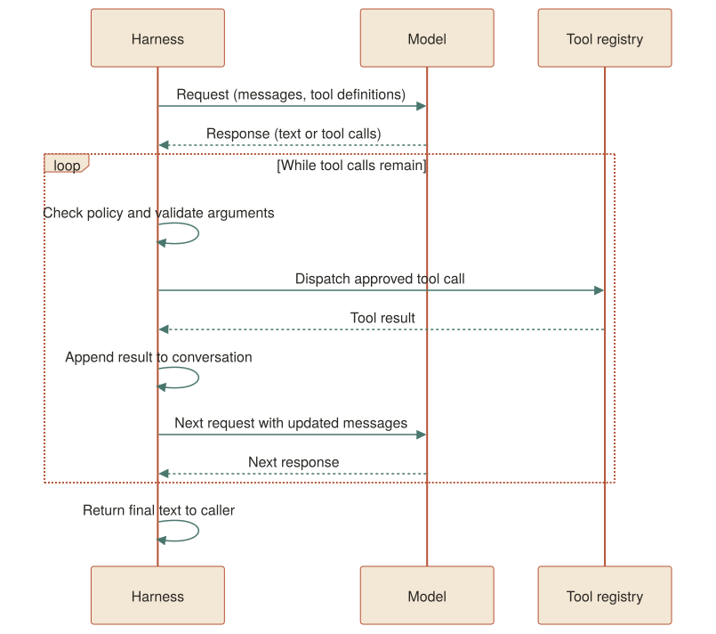

From Model Calls to a Safe, Observable, Evaluable Runtime
A practical systems guide built with Rust and proven through Quecto
EDITION 1.0.0 · OCTOBER 2026
You will not learn much by reading this book about models. You will learn a great deal by reading it about harnesses.
The model gives the agent its raw capability, but the harness shapes its behavior, safety, traceability, and cost. A well-designed harness can help a smaller model succeed by constraining the search space effectively. A poorly designed harness can make a capable model produce worse results than a smaller model operating with clear guardrails.
This book teaches you to build a harness, not to study models. You will not train a single model in these pages. What you will train is judgment — about where to draw boundaries, what to gate, what to observe, and what to measure.
The writing assumes you know programming and basic computer science but might not know agent-system architecture. You will build along in Rust. The runnable reference crate develops the model boundary, agent loop, tools, repository context, and policy. Later chapters widen the lens to the additional runtime concerns implemented in production Quecto; those chapters are architecture studies, not claims that every layer is implemented in the compact teaching crate.
This book is not documentation of one repository. It is a general guide to harness design, using Rust for implementation and Quecto as evidence that the architecture works.
Read Chapters 1–5 sequentially; these build the runnable reference crate. Chapters 6–12 examine production-runtime concerns, marking their exercises as design extensions when the teaching crate does not implement them. Chapter 13 brings the implemented core together and Appendix A maps the broader design to production Quecto.
The book uses a build-first rhythm:
Callouts appear throughout:
Prerequisites: Rust 2021, a Unix terminal, familiarity with HTTP and basic system programming. Python or TypeScript familiarity is helpful but not required.
The system can be understood as cooperating concerns. The first five are implemented in the teaching crate; the later runtime concerns are developed as designs and compared with Quecto:
| Layer | Purpose | Chapter |
|---|---|---|
| Model transport | Reach a model provider | 2 |
| Agent loop | Reason through steps safely | 3 |
| Tools | Typed communication | 4 |
| Policy | Gate reads, edits, commands | 5 |
| Verification | Confirm before finishing | 6 |
| Context | Resolve repository paths safely | 7 |
| Runtime architecture | Instructions, sessions, flavors, MCP, telemetry, evaluation | 8–12 |
| Reference harness | Assemble the runnable teaching core | 13 |
The map below is conceptual. The runnable crate has no modules for verification retries, persisted sessions, flavors, MCP, telemetry, or evaluation.

The book is divided into four parts:
Part I — Build the smallest useful core (Chapters 1–3): Model transport and the agent loop.
Part II — Add tools and safety boundaries (Chapters 4–7): Typed tools, policy, verification concepts, and repository context.
Part III — Turn a loop into a runtime (Chapters 8–11): Sessions, profiles, MCP, and observability.
Part IV — Know whether it works (Chapters 12–13): Evaluation, final assembly.
This book is released under the MIT License. The reference implementation uses serde, serde_json, ureq, and tempfile.
Chapter 1 teaches you to separate capability from behavior, to define the boundaries that determine what an agent will (and will not) do, and to establish invariants that constrain the system even when the model drifts.
You can buy a model that writes Python, solves equations, and reasons about code. You can prompt it to "fix a bug" and it will attempt to do so. What is missing is the harness: the system that constrains what the model attempts, watches what it does, measures whether it succeeded, and controls what resources it touches.
A harness decides:
Without a harness, you have a model that may write rm -rf / and you have no way to stop it. With a harness, you have a model that may try to write rm -rf / and the harness denies the call before it executes.
The harness is the system. The model is only the model.
The boundary between the model and the harness is the API call. This is a request (messages + tools) and a response (content + tool calls). Everything between the API call and the next API call is the harness.

The harness sits between calls. It transforms the response into a decision (what to do next), executes that decision (tools), and accumulates the result (messages) for the next model call.
System invariant: The harness must preserve the contract of the API. The response it receives from the model must be parseable as either text output or tool calls — no unhandled format is acceptable.
The model protocol is simple: a list of messages (system, user, assistant, tool), each with a role, a content string, and optional tool calls. The tool call returns a tool result. The harness builds the message list, sends it, and processes the response.
#[derive(Clone, Debug, PartialEq)]
pub struct Message {
pub role: String,
pub content: String,
pub tool_calls: Vec<ToolCall>,
pub tool_call_id: Option<String>,
}
impl Message {
fn plain(role: &str, content: impl Into<String>) -> Self {
Self {
role: role.to_owned(),
content: content.into(),
tool_calls: Vec::new(),
tool_call_id: None,
}
}
pub fn system(content: impl Into<String>) -> Self {
Self::plain("system", content)
}
pub fn user(content: impl Into<String>) -> Self {
Self::plain("user", content)
}
pub fn assistant(content: impl Into<String>) -> Self {
Self::plain("assistant", content)
}
pub fn assistant_with_calls(
content: impl Into<String>,
tool_calls: Vec<ToolCall>,
) -> Self {
Self {
role: "assistant".to_owned(),
content: content.into(),
tool_calls,
tool_call_id: None,
}
}
pub fn tool_result(tool_call_id: impl Into<String>, content: impl Into<String>) -> Self {
Self {
role: "tool".to_owned(),
content: content.into(),
tool_calls: Vec::new(),
tool_call_id: Some(tool_call_id.into()),
}
}
}
#[derive(Clone, Debug, PartialEq)]
pub struct ToolCall {
pub id: String,
pub name: String,
pub arguments: Value,
}
#[derive(Clone, Debug, PartialEq)]
pub struct AssistantMessage {
pub content: String,
pub tool_calls: Vec<ToolCall>,
pub finish_reason: String,
}
//
The Message type distinguishes four roles: system, user, assistant, and tool. The ToolCall type carries an identifier, a name, and JSON arguments. The AssistantMessage carries the model's response (text plus optional tool calls) and a finish reason.
Failure mode: If the harness silently drops a response field that affects control flow, it can mis-handle the turn. Decide explicitly which fields are part of the supported contract. This teaching parser validates the fields it consumes; it does not reject every unknown JSON field, which is a separate forward-compatibility choice.
The harness also sends tool definitions (JSON schemas) alongside the messages. This is how the model knows what tools exist and what arguments each accepts.
The model trait is the single interface between the harness and the model:
pub trait Model: Send {
fn complete(
&mut self,
messages: &[Message],
tools: &[Value],
) -> Result<AssistantMessage, ModelError>;
}
//
This is intentionally narrow. The harness calls complete once per loop iteration and passes all messages together (full history). The model mutates its own state (session variables, token cache, stream buffer). The harness never inspects the internal state.
The Send bound means the model can be moved between threads if a caller chooses to do so; this teaching agent loop does not spawn a worker. The model receives tool schemas from the harness as JSON values, letting the harness control what the model sees without hard-coding tool types in the transport layer.
System invariant: The model trait must never leak memory addresses, file handles, or tokens into the message flow. The only thing crossing the boundary is messages, tool schemas, and responses.
The default transport is a minimal HTTP client that:
Authorization: Bearer <key> when a key is configured.AssistantMessage with content, tool_calls, finish_reason).ModelError) rather than panicking.impl Model for HttpModel {
fn complete(
&mut self,
messages: &[Message],
tools: &[Value],
) -> Result<AssistantMessage, ModelError> {
let mut body = Map::new();
body.insert("model".to_owned(), Value::String(self.config.model.clone()));
body.insert(
"messages".to_owned(),
Value::Array(messages.iter().map(message_to_json).collect()),
);
if !tools.is_empty() {
body.insert("tools".to_owned(), Value::Array(tools.to_vec()));
}
let mut request = self
.agent
.post(&self.endpoint())
.set("content-type", "application/json");
if let Some(api_key) = self.config.api_key.as_deref() {
request = request.set("authorization", &format!("Bearer {api_key}"));
}
let response_text = match request.send_json(Value::Object(body)) {
Ok(response) => response
.into_string()
.map_err(|error| ModelError::Transport(error.to_string()))?,
Err(ureq::Error::Status(status, response)) => {
let body = response.into_string().unwrap_or_default();
return Err(ModelError::HttpStatus { status, body });
}
Err(ureq::Error::Transport(error)) => {
return Err(ModelError::Transport(error.to_string()));
}
};
let response: Value = serde_json::from_str(&response_text)
.map_err(|error| ModelError::InvalidResponse(error.to_string()))?;
parse_assistant(&response)
}
}
//
fn parse_assistant(response: &Value) -> Result<AssistantMessage, ModelError> {
let choice = response
.get("choices")
.and_then(Value::as_array)
.and_then(|choices| choices.first())
.ok_or_else(|| ModelError::InvalidResponse("missing choices[0]".to_owned()))?;
let message = choice
.get("message")
.and_then(Value::as_object)
.ok_or_else(|| ModelError::InvalidResponse("missing choice message".to_owned()))?;
let content = match message.get("content") {
None | Some(Value::Null) => String::new(),
Some(Value::String(content)) => content.clone(),
Some(_) => {
return Err(ModelError::InvalidResponse(
"message content is not a string or null".to_owned(),
));
}
};
let mut tool_calls = Vec::new();
if let Some(calls) = message.get("tool_calls") {
let calls = calls.as_array().ok_or_else(|| {
ModelError::InvalidResponse("message tool_calls is not an array".to_owned())
})?;
for call in calls {
let id = call
.get("id")
.and_then(Value::as_str)
.ok_or_else(|| ModelError::InvalidResponse("tool call missing id".to_owned()))?;
let function = call
.get("function")
.and_then(Value::as_object)
.ok_or_else(|| {
ModelError::InvalidResponse("tool call missing function".to_owned())
})?;
let name = function
.get("name")
.and_then(Value::as_str)
.ok_or_else(|| {
ModelError::InvalidResponse("tool call missing function name".to_owned())
})?;
let arguments = match function.get("arguments") {
Some(Value::String(arguments)) => serde_json::from_str(arguments).map_err(|error| {
ModelError::InvalidResponse(format!(
"tool call arguments are not valid JSON: {error}"
))
})?,
Some(Value::Object(arguments)) => Value::Object(arguments.clone()),
_ => {
return Err(ModelError::InvalidResponse(
"tool call missing arguments".to_owned(),
));
}
};
tool_calls.push(ToolCall {
id: id.to_owned(),
name: name.to_owned(),
arguments,
});
}
}
Ok(AssistantMessage {
content,
tool_calls,
finish_reason: choice
.get("finish_reason")
.and_then(Value::as_str)
.unwrap_or_default()
.to_owned(),
})
}
//
The error type distinguishes four classes:
InvalidConfig — the harness configuration is wrong (missing base URL, empty model name).Transport — the network call itself failed (DNS, TLS handshake, timeout).HttpStatus — the server returned a non-200 status (401, 500, etc.).InvalidResponse — the model's response structure was unexpected (no choices[0]).Failure mode: If the harness silently accepts any HTTP response (treating a 400 Bad Request as a "model is thinking" signal), the agent will loop forever on a configuration error. Every non-200 response must be surfaced as an error.
Quecto's production quecto-agent crate defines its own related Model interface; it is not the same Rust trait as this teaching crate. Its production path adds:
The teaching harness omits streaming (the book's primary path is synchronous). See the "Beyond Rust" note below for how these features map to Python (using httpx streams) or TypeScript (using ReadableStream).
Write a unit test that sends a 401 Unauthorized response and verifies the harness returns ModelError::HttpStatus. Then modify HttpModel::new to reject empty base_url. Push these tests to the reference harness.
| Concern | Python | TypeScript | Go |
|---|---|---|---|
Model::complete |
openai::client.complete(messages, tools) |
openai.Client.chat.completions.create |
openai.Client.Chat |
Send bound |
Not needed (GIL) | Promise in async/await |
sync |
| Streaming | response.iter_lines() |
ReadableStream |
http.Response.Body |
You can build the crate and run the model transport tests:
cd books/building-a-coding-agent-harness/examples/reference-harness
cargo test --test model_http
The model transport integration tests should pass. Run cargo test to execute the full reference-crate suite.
Chapter 2 teaches you to treat the model as a fidelity source of truth, not as a co-scientist. The model gives you output; the harness gives you safety. You will build a model transport that preserves the model's raw behavior (including its failures) while surfacing errors in a structured way.
Many agent frameworks add layers between the user and the model: a "safety filter" that rewrites prompts, a "pre-processor" that reformats messages, a "post-processor" that claims to improve the output. These layers are invisible to the harness writer and may contradict the harness's own invariants.
A minimal harness says: the model gives you what the model gives you. The harness decides what to do with it. The model is not trusted to decide what to say (that is the harness's job: policy, tools, constraints). The model is trusted to generate text (that is its job).
The boundary: one model call per loop iteration, full history sent together.
The model transport is configured with a single struct:
#[derive(Clone, Debug)]
pub struct ModelConfig {
pub base_url: String,
pub api_key: Option<String>,
pub model: String,
pub timeout_secs: u64,
}
//
ModelConfig carries four fields:
base_url — the provider endpoint (normalize to always append /v1/chat/completions).api_key — optional; omitting it is valid for local providers (Ollama, LM Studio).model — the model name (e.g., "qwen3.8-35b").timeout_secs — how long to wait before giving up.Failure mode: If
base_urlis empty andtimeout_secsis0, theHttpModel::newconstructor returnsModelError::InvalidConfig. A zero timeout means the request will always fail (the HTTP client will abort immediately). This is not a runtime bug; it is a configuration bug surfaced at initialization.
The harness constructs the request body as a JSON object with model and messages. If tools exist, it adds a tools array. It sends a POST with Content-Type: application/json and an optional Authorization header.
impl Model for HttpModel {
fn complete(
&mut self,
messages: &[Message],
tools: &[Value],
) -> Result<AssistantMessage, ModelError> {
let mut body = Map::new();
body.insert("model".to_owned(), Value::String(self.config.model.clone()));
body.insert(
"messages".to_owned(),
Value::Array(messages.iter().map(message_to_json).collect()),
);
if !tools.is_empty() {
body.insert("tools".to_owned(), Value::Array(tools.to_vec()));
}
let mut request = self
.agent
.post(&self.endpoint())
.set("content-type", "application/json");
if let Some(api_key) = self.config.api_key.as_deref() {
request = request.set("authorization", &format!("Bearer {api_key}"));
}
let response_text = match request.send_json(Value::Object(body)) {
Ok(response) => response
.into_string()
.map_err(|error| ModelError::Transport(error.to_string()))?,
Err(ureq::Error::Status(status, response)) => {
let body = response.into_string().unwrap_or_default();
return Err(ModelError::HttpStatus { status, body });
}
Err(ureq::Error::Transport(error)) => {
return Err(ModelError::Transport(error.to_string()));
}
};
let response: Value = serde_json::from_str(&response_text)
.map_err(|error| ModelError::InvalidResponse(error.to_string()))?;
parse_assistant(&response)
}
}
//
The endpoint method normalizes the URL: if the base URL already ends with /v1, it appends /chat/completions; otherwise it appends /v1/chat/completions. This handles both https://api.openai.com/v1 and https://api.openai.com correctly.
System invariant: The request body must be a valid OpenAI-compatible format. The harness must not add custom fields (like
temperature,max_tokens) unless they are explicitly supported by the target provider. Do not assume a model supportstemperature=0.5just because another model does.
The model returns a JSON body. The harness parses it into an AssistantMessage:
fn parse_assistant(response: &Value) -> Result<AssistantMessage, ModelError> {
let choice = response
.get("choices")
.and_then(Value::as_array)
.and_then(|choices| choices.first())
.ok_or_else(|| ModelError::InvalidResponse("missing choices[0]".to_owned()))?;
let message = choice
.get("message")
.and_then(Value::as_object)
.ok_or_else(|| ModelError::InvalidResponse("missing choice message".to_owned()))?;
let content = match message.get("content") {
None | Some(Value::Null) => String::new(),
Some(Value::String(content)) => content.clone(),
Some(_) => {
return Err(ModelError::InvalidResponse(
"message content is not a string or null".to_owned(),
));
}
};
let mut tool_calls = Vec::new();
if let Some(calls) = message.get("tool_calls") {
let calls = calls.as_array().ok_or_else(|| {
ModelError::InvalidResponse("message tool_calls is not an array".to_owned())
})?;
for call in calls {
let id = call
.get("id")
.and_then(Value::as_str)
.ok_or_else(|| ModelError::InvalidResponse("tool call missing id".to_owned()))?;
let function = call
.get("function")
.and_then(Value::as_object)
.ok_or_else(|| {
ModelError::InvalidResponse("tool call missing function".to_owned())
})?;
let name = function
.get("name")
.and_then(Value::as_str)
.ok_or_else(|| {
ModelError::InvalidResponse("tool call missing function name".to_owned())
})?;
let arguments = match function.get("arguments") {
Some(Value::String(arguments)) => serde_json::from_str(arguments).map_err(|error| {
ModelError::InvalidResponse(format!(
"tool call arguments are not valid JSON: {error}"
))
})?,
Some(Value::Object(arguments)) => Value::Object(arguments.clone()),
_ => {
return Err(ModelError::InvalidResponse(
"tool call missing arguments".to_owned(),
));
}
};
tool_calls.push(ToolCall {
id: id.to_owned(),
name: name.to_owned(),
arguments,
});
}
}
Ok(AssistantMessage {
content,
tool_calls,
finish_reason: choice
.get("finish_reason")
.and_then(Value::as_str)
.unwrap_or_default()
.to_owned(),
})
}
//
The parser extracts:
content — the text (empty string if null).tool_calls — a list of call objects (empty list if none).finish_reason — "stop", "length", or "tool_calls" (or empty string if missing).Failure mode: If the model returns
finish_reason: "content_filter"(content filtered out by the provider), the harness treats the text as empty. Some frameworks interpret this as a request for user feedback. The harness here is silent: no text, no tool calls, step ends (and the next loop iteration will send the same messages). This is intentional — we do not want the agent to retry a filtered prompt without understanding why it was filtered.
The parse_assistant function returns ModelError::InvalidResponse if the response is structurally wrong (no choices, no message, non-string content, or invalid tool call arguments). A malformed response is never treated as "the model gave no output."
Different providers behave differently:
| Provider | Tool call format | finish_reason on tool calls |
|---|---|---|
| OpenAI | {"id":"call_...", "function":{"name":"read_file","arguments":"..."}} |
"tool_calls" |
| Anthropic | {"id":"toolu_...", "input":{"path":"..."}, "type":"tool_use"} |
(no finish_reason, tool calls implied) |
| Ollama | Same as OpenAI (OpenAI-compatible endpoint) | "tool_calls" |
The teaching harness uses the OpenAI format. If you target Anthropic, you must parse a slightly different structure (input is a raw object, not a JSON string). The Beyond Rust note below shows the mapping.
Quecto in production: Quecto supports provider adapters that normalize all responses to a single internal format before parsing. This isolates provider-specific parsing from the harness's core logic.
Write a mock model that returns a response with finish_reason: "content_filter" and an empty content string. Verify the harness returns Outcome::Complete("").
| Layer | Python | TypeScript |
|---|---|---|
| Transport | openai::client.chat.completions.create(messages=msgs, tools=tools) |
openai-js or fetch |
| Config | base_url (default "https://api.openai.com/v1") |
Same, or OPENAI_API_KEY env var |
| Timeout | timeout=float(options.timeout) |
AbortSignal.timeout(timeout) |
cd books/building-a-coding-agent-harness/examples/reference-harness
cargo test --test model_http
Test returns_text_reply_and_sends_openai_compatible_body asserts the request body matches the OpenAI spec. Run it in isolation:
cargo test --test model_http returns_text_reply
Chapter 3 teaches you to wrap a single model call in a loop that: (1) executes tool calls the model produces, (2) accumulates results, (3) detects when the model is stuck repeating itself, and (4) terminates safely. This is the core algorithm of any coding agent: ask, act, measure, repeat — bounded.
A model call returns a response with a list of tool calls (or just text). The harness must:
Without a loop bound, the model can:
The loop must terminate bounded by steps, by repetition, or by policy denial.
The agent is initialized with a model, a tool registry, a context (file system), and a configuration. The run method receives a prompt string, pushes it as a user message, and then enters the loop:
pub fn run(&mut self, prompt: &str) -> Outcome {
self.messages.push(Message::user(prompt));
let mut repeat_guard = RepeatGuard::default();
let mut denial_count: usize = 0;
for _ in 0..self.config.max_steps {
let reply = match self
.model
.complete(&self.messages, &self.registry.schemas())
{
Ok(reply) => reply,
Err(error) => return Outcome::Error(error.to_string()),
};
self.messages.push(Message::assistant_with_calls(
reply.content.clone(),
reply.tool_calls.clone(),
));
if reply.tool_calls.is_empty() {
return Outcome::Complete(reply.content);
}
for call in reply.tool_calls {
// Apply the default ReadOnly policy when denial_limit > 0.
if self.config.denial_limit > 0 {
let policy = Policy::from_preset(Preset::ReadOnly);
match policy.decide(&call) {
Decision::Allow => {}
Decision::Ask => {
// Waiting for user approval: do NOT execute.
// Report the skipped action so the model protocol remains complete.
self.messages.push(Message::tool_result(
call.id.clone(),
"policy requires user approval; the operation was not executed",
));
// An Ask decision is not a denial and does not increment denial_count.
continue;
}
Decision::Deny(reason) => {
denial_count += 1;
if denial_count >= self.config.denial_limit.max(1) {
return Outcome::Blocked;
}
self.messages.push(Message::tool_result(
call.id.clone(),
format!("policy denied: {reason}"),
));
continue;
}
}
}
let result = match self.registry.execute(&call, &mut self.context) {
Ok(output) => output.content,
Err(error) => error.to_string(),
};
self.messages.push(Message::tool_result(
call.id.clone(),
result.clone(),
));
denial_count = 0;
if repeat_guard.observe(
&call,
&result,
self.context.changes().len(),
self.config.repeat_limit,
) {
return Outcome::RepeatedAction;
}
}
}
Outcome::StepLimit
}
//
Each iteration:
System invariant: Every tool call in the response must correspond to a tool registered in the registry. An unknown tool name is a tool error, not a panic. The harness must never crash on an unknown tool name.
The RepeatGuard struct detects when the model is stuck in a feedback loop: it sends the same tool call with the same arguments and receives the same output — repeated 3 or more times in a row (configurable via repeat_limit).
// Inside agent.rs (RepeatGuard struct)
The guard computes a fingerprint from (call name, call arguments, tool result). If the fingerprint matches the previous call and the file system has not changed (checked via context.changes().len()), the repetition count increments. Once the streak reaches repeat_limit, the agent returns Outcome::RepeatedAction.
Failure mode: A naive guard that only checks the call name (ignoring arguments and result) will detect distinct writes as identical. The fingerprint must include the full call + full result. The file-system-change counter is the critical differentiator: writing "file v1" and "file v2" are different even with the same tool name.
The agent returns one of these outcomes:
| Outcome | When |
|---|---|
Complete(String) |
Model returned no tool calls (text only). |
StepLimit |
Exceeded max_steps iterations without a text-only response. |
RepeatedAction |
Model sent the same tool call 3+ times with unchanged results. |
Blocked |
Policy denied 3+ tool calls in a row (configurable via denial_limit). |
Cancelled |
Reserved variant; Agent::run does not currently return it. |
VerificationFailed { attempts } |
Reserved variant; verification retries are not implemented in this crate. |
Error(String) |
A non-recoverable error occurred (model transport failure, file-system I/O). |
System invariant:
StepLimitis not success, but it also does not automatically roll back edits in the reference crate. The harness returns the outcome and keeps the recorded changes in context; a caller must decide how to present, inspect, or revert those changes.
When denial_limit > 0, each tool call is checked against a default ReadOnly policy. If the call is denied (e.g., the model calls write_file or run_command under a read-only preset), the harness records the denial and increments the denial counter. After denial_limit consecutive denials, the agent returns Outcome::Blocked.
This is an optional safety layer. It is not enabled by default (denial_limit: 0 means no gating). In the teaching implementation, an Ask decision does not prompt a person; it returns an explanatory tool result and leaves the operation unexecuted. A real interactive approval flow needs a separate approver component.
Quecto in production: Quecto resolves layered TOML flavors (
quecto-agent/src/flavor.rs) and combines them with approval presets and per-tool overrides. The teaching crate stops at three fixed presets and does not implement flavor loading or interactive approval.
Write a test that:
echo calls (same arguments, same result).EchoTool in the registry.repeat_limit: 3.Outcome::RepeatedAction.You should be able to find an equivalent test in tests/agent_loop.rs (test name: agent_stops_after_three_identical_tool_observations).
| Concern | Python | TypeScript |
|---|---|---|
| Loop bound | for _ in range(max_steps): |
while (step < max_steps) { ... } |
| Repeat guard | Track (tool_name, args, result) tuple in a list |
Map |
| State | agent.messages (mutated in place) |
const history: Message[] |
cd books/building-a-coding-agent-harness/examples/reference-harness
cargo test --test agent_loop agent_stops_after_three_identical_tool_observations
This test verifies that repeated identical tool calls (no file-system change) trigger the repeat guard.
Chapter 4 teaches you to design a tool interface that is: (1) typed (the harness knows the schema before the model speaks), (2) safe (unregistered tools fail closed, not with a panic), and (3) observable (every tool produces output the harness can record).
A raw text prompt ("delete /tmp") is unsafe: the model's intent is ambiguous. A typed tool definition ("delete_file: {path: string} → {error: null | string}") improves the boundary because:
A tool is a callable unit of work. It has a name, a description, a JSON schema, and a run function. The harness exposes the tool to the model via the tool schema, and executes the tool when the model requests it.
The tool trait is the interface the harness uses to discover, register, and execute tools:
pub trait Tool: Send + Sync {
fn name(&self) -> &'static str;
fn description(&self) -> &'static str;
fn schema(&self) -> Value;
fn run(&self, args: &Value, cx: &mut Context) -> ToolResult;
}
//
Four methods:
name() — the unique identifier (lowercase, underscore-separated).description() — a human-readable summary (used in the schema).schema() — the JSON Schema for arguments (used by the model).run(args, context) — the execution function (takes arguments, returns output).The Send + Sync bounds make a tool eligible to be moved or shared across threads; the teaching agent loop itself does not spawn worker threads.
System invariant: A tool's
runmethod must never panic. If a tool encounters an error (file not found, command timeout), it must returnToolError::Failed(...)— never a Rustpanic!(). A panic inside a tool execution corrupts the agent's state and forces a restart.
The registry is a BTreeMap from tool name to a boxed tool trait object. It provides:
register(tool) — add a tool.schemas() — generate the JSON schema list (sent to the model).execute(call, context) — find and run a tool by name.impl ToolRegistry {
pub fn new() -> Self {
Self::default()
}
pub fn register(&mut self, tool: Box<dyn Tool>) {
self.tools.insert(tool.name().to_owned(), tool);
}
pub fn schemas(&self) -> Vec<Value> {
self.tools
.values()
.map(|tool| {
json!({
"type": "function",
"function": {
"name": tool.name(),
"description": tool.description(),
"parameters": tool.schema(),
}
})
})
.collect()
}
pub fn execute(&self, call: &ToolCall, cx: &mut Context) -> ToolResult {
let tool = self
.tools
.get(&call.name)
.ok_or_else(|| ToolError::Unknown(call.name.clone()))?;
tool.run(&call.arguments, cx)
}
}
//
The BTreeMap ensures deterministic ordering of tools in the schema (alphabetical). This matters because the model's output depends on the order of tools it sees.
Failure mode: If the registry silently ignores a duplicate registration (allowing two tools to share the same name), the last-registered tool silently wins. The harness should log a duplicate-name warning but not reject the registration (the programmer made a mistake, the harness should tolerate it).
The reference harness includes four tools:
| Tool | Operation | Example |
|---|---|---|
ReadFile |
Read a file (path must be inside repo). | read_file(path: "src/main.rs") |
WriteFile |
Write/overwrite a file (records undo snapshots). | write_file(path: "src/main.rs", content: "...") |
ApplyPatch |
Replace the first occurrence of old text with new. |
apply_patch(path: "src/main.rs", old: "fn foo()", new: "fn bar()") |
RunCommand |
Run a command through the context's timeout and output limits. | run_command(command: "cargo test") |
Each tool records a FileChange (before/after content) in the context. This enables:
Quecto in production: Quecto adds
SearchText,ListFiles,GitDiff, andGitStatusaround the file, patch, and shell tools. The exported tool surface is listed inquecto-agent/src/lib.rsand implemented underquecto-agent/src/tools/.
Quecto's tools extend this interface with repository search, file listing, Git status/diff inspection, shell execution, and optional MCP-backed tools.
See the "Beyond Rust" note for how Quecto's tool system maps to Python (using openai::tools parameter with a custom tool schema).
Write a tool AppendFile that appends text to the end of a file (creating the file if it does not exist). Register it in the test suite and verify that:
FileChange with the before/after.You can find an equivalent pattern in tests/safety.rs (test name: write_file_is_atomic_and_records_ordered_undo_snapshots).
| Concept | Python | TypeScript |
|---|---|---|
Tool::schema() |
{"type":"object","properties":{...}} |
Same |
Tool::run() |
Custom callable object | Custom class/method |
| Registry | dict[str, Tool] |
Map<string, Tool> |
cd books/building-a-coding-agent-harness/examples/reference-harness
cargo test --test agent_loop registry_emits_schemas_in_name_order
This test verifies that the registry sorts tool schemas alphabetically (echo < zeta).
Chapter 5 teaches you to design a gate that decides whether a tool call should execute. This gate is separate from the tool itself (a tool's job is to do something; the policy's job is to decide if it may). The gate supports three presets: readonly, editor, and full — each with increasing permissions.
A model will happily call rm -rf / if it thinks the file path matches. A model will also call git push origin main when you asked it to "fix a bug" (it thought you wanted to push the fix). Without a policy, the harness executes every tool call the model makes.
The policy layer answers: should this tool call execute?
The policy returns one of three decisions:
System invariant: The policy must be a pure function of the call and the preset. It must not inspect the file system (no file I/O in the policy decision). If it does, a file system error could throttle the agent (a file-system "file not found" error causes the policy to reject all calls).
pub enum Decision {
Allow,
Ask,
Deny(String),
}
Allow — proceed without interruption.Ask — the user has authorized this operation but the preset does not permit it directly. The harness displays a prompt: "The agent wants to call `write_file("main.rs", ...). Approve?" The user (or a stored preset) responds Yes/No.Deny(String) — the call is unconditionally rejected. The string explains why (used in logs and in the agent's "Blocked" message).Three presets encode safety trade-offs:
| Preset | ReadFile | WriteFile | ApplyPatch | RunCommand |
|---|---|---|---|---|
ReadOnly |
✓ (Allow) | ✗ (Ask) | ✗ (Ask) | ✗ (Ask) |
Editor |
✓ (Allow) | ✓ (Allow) | ✓ (Allow) | ✗ (Ask) |
Full |
✓ (Allow) | ✓ (Allow) | ✓ (Allow) | ✓ (Allow)* |
*Full does not mean all commands are allowed. It means all tools are allowed. The hard-denied command list (below) still applies.
Quecto in production: Quecto resolves layered TOML flavors (
quecto-agent/src/flavor.rs) and has approval presets and per-tool overrides. The teaching crate stops at three fixed presets and hard-deny patterns; it does not implement flavor loading or interactive approval.
Even under the Full preset, certain commands are always blocked:
| Pattern | Example |
|---|---|
sudo (with space) |
sudo rm -rf / |
sudo$ |
sudo; rm -rf / |
git push (with space) |
git push origin main |
sh -c |
sh -c 'rm -rf /' |
These are patterns, not exact matches. A command containing any of these substrings is rejected. This is a conservative heuristic: it may over-block (e.g., a legitimate sudo docker run --rm ... is blocked because it contains "sudo "), but it avoids under-blocking (a destructive command slips through).
Failure mode: If the pattern matching is too loose (matching "prefix" substring in "file-prefixed.log"), the agent cannot run legitimate commands. The heuristic should be tuned empirically. A better approach is token-based matching (match the first token against a block list) rather than substring matching.
The Policy::decide(call) method follows a simple three-step logic:
Deny("hard-denied command"). (The check is performed on the command argument of the call.)Deny("unknown tool 'name'").Allow. If no (it is known but not in this preset), Ask.use crate::model::ToolCall;
use serde_json::Value;
use std::collections::BTreeSet;
/// Outcome of a policy gate.
#[derive(Clone, Debug, PartialEq)]
pub enum Decision {
Allow,
Ask,
Deny(String),
}
/// Policy presets that trade convenience against safety.
#[derive(Clone, Copy, Debug, PartialEq)]
pub enum Preset {
ReadOnly,
Editor,
Full,
}
/// Hardcoded commands that even Full never permits.
const HARD_DENY: &[&str] = &[
"sudo ", "sudo;", "sudo$",
"git push", "git push ", "git push;",
"sh -c", "sh -c'", "sh -c\"",
"rm -rf /",
];
/// Union of ALL known tool names (used to distinguish "unknown" from "allowed in another preset").
const ALL_TOOLS: &[&str] = &["read_file", "write_file", "apply_patch", "run_command"];
fn is_known_tool(name: &str) -> bool {
ALL_TOOLS.contains(&name)
}
/// Summary of a spawned command execution.
#[derive(Clone, Debug, PartialEq)]
pub struct ToolSummary {
pub stdout: Option<String>,
pub stderr: Option<String>,
pub exit_code: Option<i32>,
pub truncated: bool,
pub timed_out: bool,
pub cancelled: bool,
}
/// A policy evaluator that gates tool calls according to a preset.
#[derive(Clone, Debug)]
pub struct Policy {
presets: BTreeSet<&'static str>,
deny_list: &'static [&'static str],
}
impl Policy {
pub fn from_preset(preset: Preset) -> Self {
let presets = match preset {
Preset::ReadOnly => {
let mut p = BTreeSet::new();
p.insert("read_file");
p
}
Preset::Editor => {
let mut p = BTreeSet::new();
p.insert("read_file");
p.insert("write_file");
p.insert("apply_patch");
p
}
Preset::Full => {
let mut p = BTreeSet::new();
p.insert("read_file");
p.insert("write_file");
p.insert("apply_patch");
p.insert("run_command");
p
}
};
Self {
presets,
deny_list: HARD_DENY,
}
}
/// Return the decision for a single tool call under this policy.
pub fn decide(&self, call: &ToolCall) -> Decision {
// 1. Hard-denied commands always fail.
if self.deny_list.iter().any(|d| {
call.arguments
.get("command")
.and_then(Value::as_str)
.map(|c| c.contains(d))
.unwrap_or(false)
}) {
return Decision::Deny("hard-denied command".to_owned());
}
let known = is_known_tool(call.name.as_str());
let in_preset = self.presets.contains(call.name.as_str());
match (known, in_preset) {
(true, true) => Decision::Allow,
(true, false) => Decision::Ask,
(false, _) => Decision::Deny(format!("unknown tool '{}'", call.name)),
}
}
}
System invariant: The
ALL_TOOLSarray (union of all preset tools) must be kept in sync with the actual tools registered in the harness. If you add a new tool, add its name toALL_TOOLS. Otherwise the policy will incorrectly classify it as "unknown" (and deny it).
Quecto combines the policy decision with flavor configuration, an approval mode, a terminal approver, and trust checks. These are separate production components rather than fields in the teaching Policy type.
The teaching harness is simpler: one policy, one preset, no overrides.
Write a test that:
ReadOnly policy.read_file("a") returns Allow, write_file("a", "...") returns Ask.run_command("printf safe") returns Ask.Full policy and verifies run_command("echo ok") returns Allow.You can find equivalent tests in tests/safety.rs (test name: policy_presets_gate_reads_edits_and_commands).
| Concept | Python | TypeScript |
|---|---|---|
Decision |
enum: {Allow, Ask, Deny} |
enum: { Allow, Ask, Deny } |
Policy::decide |
Callable class: def decide(self, call: ToolCall) -> Decision: |
decide(call: ToolCall): Decision |
| Preset | Dictionary mapping tool name → boolean | Record type |
cd books/building-a-coding-agent-harness/examples/reference-harness
cargo test --test safety policy_presets_gate_reads_edits_and_commands
This test verifies that ReadOnly allows reads, asks writes, and asks commands.
This chapter designs a verification gate. The compact reference crate does not include verification retries or automatic rollback; Quecto's production verifier is a separate, simpler command gate.
A model will claim its work is finished when:
None of these are sufficient. The model may have introduced a regression that the tests will catch. The model may have deleted a dependency that a linter will flag.
Verification is one answer: before the agent reports "done," run appropriate verification commands. If verification fails, report the result and define explicitly whether the agent may make a bounded repair attempt. Rollback is a separate policy decision; automatically discarding all edits can destroy useful work and is not a behavior of the compact teaching crate.
System invariant: The agent must never report
Outcome::Complete(...)if verification has not been run. Verification must always run (unless explicitly disabled).
When the agent's model says "done" (no tool calls), the harness:
Outcome::Complete(...).Outcome::VerificationFailed { attempts }.
A verification command is any command that:
0 on success.Common verification commands:
cargo test (Rust unit tests).cargo clippy (Rust linter).cargo fmt --check (formatting check).npm test (JavaScript/TypeScript tests).flake8 (Python linter).tsc --noEmit (TypeScript type check).Failure mode: If verification fails with a structural error (e.g., the test runner crashed with a syntax error), the harness must not blindly retry (the agent will undo and re-apply the same broken code). Instead, the harness should short-circuit and report the structural error.
Each verification failure consumes one retry. The budget (configurable, default 3) limits how many times the agent retried after verification failures.
| Outcome | Meaning |
|---|---|
Complete(String) |
Model said done, verification passed. |
VerificationFailed { attempts } |
Model said done, verification failed, retried 3 times and failed again. |
| (loop continues) | Model said done, verification failed, retry budget not exhausted. |
Quecto in production:
quecto-agent/src/verify.rsruns configured verification commands through the repository command boundary and reports each command's status and output. Quecto does not implement the incremental, parallel, or statistical policies sketched in earlier drafts of this chapter. Verification is a completion gate, not proof that a change is correct; choose commands that exercise the behavior you care about.
Suppose the model edits src/main.rs and runs cargo test. The test output is:
test src/main.rs ... FAILED (assertion: x == y, got 5, expected 10)
test src/util.rs ... PASSED
The harness:
src/main.rs.cargo test again (retry 1).Outcome::VerificationFailed { attempts: 3 }.src/main.rs."The model (prompted with the failures) may then make a corrective edit (change x = 5 to x = 10 in src/main.rs).
System invariant: A retry policy must define what happens to the current diff. Do not claim that a retry implies rollback: preserve, checkpoint, or revert changes intentionally, and make the user-visible behavior explicit.
Write a verification test that:
test.rs with assert_eq!(1, 2) (always fails).cargo test (which will include test.rs).Outcome::VerificationFailed { attempts: 3 }.This test is a design exercise: the compact teaching crate does not yet include a Verifier module. To experiment, build the command-runner boundary first and keep subprocess tests opt-in where the environment restricts process creation.
| Verification | Python | TypeScript |
|---|---|---|
| Unit tests | pytest |
jest, mocha |
| Linter | flake8, pylint |
eslint |
| Type check | N/A (dynamic) | tsc --noEmit |
| Formatter | black --check |
prettier --check |
The current teaching-crate suite includes non-spawning model, tool, context, policy, and agent tests. Command execution and verification require child processes and should be run only in an environment that permits them.
Chapter 7 teaches you to load repository instructions, system prompts, seeded context, and precedence rules before the agent starts. You will also learn to protect against accidental instruction mixing (e.g., a
.envfile's instructions are not the project instructions).
A coding agent needs context before it starts working. It needs to know:
.rules.md file)?If the agent cannot find these instructions, it must guess, and guessing is bad. A well-designed harness loads context from a standardized location (.claude/rules.md, .gpt_prompt.md, README.md) before any model call.
System invariant: The agent must never inject instructions that are not authorized by the current project. If the user's
.envfile contains an instruction like "always prepend the UUID header," the agent must not load that instruction.
The Context struct holds:
repo_root — the repository root (canonicalized).changes — a list of all file modifications (before/after).limits — optional command execution limits (timeout, output size).cancel_token — a handle that allows the harness to cancel a running command.use std::error::Error;
use std::fmt;
use std::io::Read as _;
use std::path::PathBuf;
use std::process::Command;
use std::sync::atomic::{AtomicBool, Ordering};
use std::sync::Arc;
use std::time::{Duration, Instant};
#[derive(Clone, Debug, PartialEq)]
pub struct FileChange {
pub path: PathBuf,
pub before: Option<Vec<u8>>,
pub after: Option<Vec<u8>>,
}
#[derive(Debug)]
pub struct ContextError(pub String);
impl fmt::Display for ContextError {
fn fmt(&self, formatter: &mut fmt::Formatter<'_>) -> Result<(), fmt::Error> {
write!(formatter, "repository context error: {}", self.0)
}
}
impl Error for ContextError {}
/// Token that allows the harness to cancel a running command.
#[derive(Clone, Debug)]
pub struct CancelToken {
cancelled: Arc<AtomicBool>,
}
impl CancelToken {
pub fn new() -> Self {
Self {
cancelled: Arc::new(AtomicBool::new(false)),
}
}
pub fn cancel(&self) {
self.cancelled.store(true, Ordering::SeqCst);
}
pub fn is_cancelled(&self) -> bool {
self.cancelled.load(Ordering::SeqCst)
}
}
/// Limits for a spawned subprocess.
#[derive(Clone, Debug, PartialEq)]
pub struct CommandLimits {
pub timeout: Duration,
pub max_output_bytes: usize,
}
/// Default limits used when the harness is created without explicit constraints.
const DEFAULT_TIMEOUT: Duration = Duration::from_secs(30);
const DEFAULT_MAX_OUTPUT: usize = 64 * 1024;
pub struct Context {
repo_root: PathBuf,
changes: Vec<FileChange>,
limits: Option<CommandLimits>,
cancel_token: Option<CancelToken>,
}
impl Context {
pub fn new(repo_root: PathBuf) -> Result<Self, ContextError> {
let repo_root = repo_root
.canonicalize()
.map_err(|error| ContextError(error.to_string()))?;
if !repo_root.is_dir() {
return Err(ContextError(format!(
"{} is not a directory",
repo_root.display()
)));
}
Ok(Self {
repo_root,
changes: Vec::new(),
limits: Some(CommandLimits {
timeout: DEFAULT_TIMEOUT,
max_output_bytes: DEFAULT_MAX_OUTPUT,
}),
cancel_token: Some(CancelToken::new()),
})
}
pub fn with_command_limits(
repo_root: PathBuf,
limits: CommandLimits,
cancel_token: CancelToken,
) -> Result<Self, ContextError> {
let repo_root = repo_root
.canonicalize()
.map_err(|error| ContextError(error.to_string()))?;
if !repo_root.is_dir() {
return Err(ContextError(format!(
"{} is not a directory",
repo_root.display()
)));
}
Ok(Self {
repo_root,
changes: Vec::new(),
limits: Some(limits),
cancel_token: Some(cancel_token),
})
}
pub fn changes(&self) -> &[FileChange] {
&self.changes
}
pub fn record_change(&mut self, change: FileChange) {
self.changes.push(change);
}
/// Resolve a path relative to the repo root and reject anything that escapes.
pub fn resolve_existing(&self, relative: &str) -> Result<PathBuf, ContextError> {
let candidate = self.repo_root.join(relative);
let canonical = match candidate.canonicalize() {
Ok(c) => c,
Err(_) => return Err(ContextError("file does not exist".into())),
};
if !canonical.starts_with(&self.repo_root) {
return Err(ContextError("path escapes repo root".into()));
}
Ok(canonical)
}
/// Resolve a path for creation: the parent directory must already exist
/// inside the repo. Does not require the target file itself to exist.
pub fn resolve_for_create(&self, relative: &str) -> Result<PathBuf, ContextError> {
let candidate = self.repo_root.join(relative);
// If the path is a bare filename (e.g. "note.txt"), the repo root
// itself is the parent, so skip canonicalizing the parent.
if candidate.parent().map(|p| p.as_os_str().is_empty()).unwrap_or(false) {
return Ok(candidate);
}
let parent = candidate.parent().unwrap();
let parent_canonical = parent.canonicalize().map_err(|_| {
ContextError(format!("parent directory does not exist: {}", parent.display()))
})?;
if !parent_canonical.starts_with(&self.repo_root) {
return Err(ContextError("parent path escapes repo root".into()));
}
Ok(candidate)
}
/// Run a shell command subject to timeout, output truncation, and cancellation.
///
/// For a synchronous harness (like this one), the implementation uses a
/// blocking read. Short timeouts (e.g. 50 ms) only work when the harness
/// is layered with an async runtime (see the async section of the book).
pub fn run_command(&self, command: &str) -> Result<super::policy::ToolSummary, ContextError> {
let limits = self.limits.as_ref().ok_or_else(|| {
ContextError("command execution not configured".into())
})?;
let token = self.cancel_token.as_ref().ok_or_else(|| {
ContextError("command execution not configured".into())
})?;
// Fast path: already cancelled.
if token.is_cancelled() {
return Ok(super::policy::ToolSummary {
stdout: Some(String::new()),
stderr: None,
exit_code: None,
truncated: false,
timed_out: false,
cancelled: true,
});
}
let start = Instant::now();
let mut cmd = Command::new("/bin/sh");
cmd.arg("-c").arg(command);
cmd.stdout(std::process::Stdio::piped());
let mut handle = cmd.spawn().map_err(|e| ContextError(format!("spawn failed: {e}")))?;
let mut stdout = handle.stdout.take().ok_or_else(|| {
ContextError("failed to take stdout".into())
})?;
let mut data = Vec::new();
let mut buf = vec![0u8; 256];
loop {
// Check timeout and cancellation before reading.
if start.elapsed() >= limits.timeout {
handle.kill().ok();
// Do NOT wait — the process may linger as a zombie in some
// environments; returning early avoids a hang.
return Ok(super::policy::ToolSummary {
stdout: Some(String::from_utf8_lossy(&data).to_string()),
stderr: None,
exit_code: None,
truncated: data.len() >= limits.max_output_bytes,
timed_out: true,
cancelled: false,
});
}
if token.is_cancelled() {
handle.kill().ok();
return Ok(super::policy::ToolSummary {
stdout: Some(String::from_utf8_lossy(&data).to_string()),
stderr: None,
exit_code: None,
truncated: false,
timed_out: false,
cancelled: true,
});
}
match stdout.read(&mut buf) {
Ok(n) => {
if n > 0 {
data.extend_from_slice(&buf[..n]);
if data.len() >= limits.max_output_bytes {
data.truncate(limits.max_output_bytes);
}
} else if n == 0 {
break;
}
}
Err(_) => break,
}
}
let status = handle.try_wait().ok().and_then(|s| s.unwrap().code()).unwrap_or(-1);
Ok(super::policy::ToolSummary {
stdout: Some(String::from_utf8_lossy(&data).to_string()),
stderr: None,
exit_code: Some(status),
truncated: false,
timed_out: false,
cancelled: false,
})
}
}
The Context::new(root) constructor canonicalizes the root and returns an error if it is not a valid directory. The Context::with_command_limits(root, limits, token) constructor adds command execution support (see the run_command section below).
System invariant:
Context::newmust never panic or accept an invalid path. It must returnContextError(orNonein the result type) for any invalid path.
The harness exposes two path resolution methods:
| Method | Purpose | Behavior |
|---|---|---|
resolve_existing(relative) |
Read a file. | Must exist (canonicalized). Rejects path escapes (canonical path outside repo). |
resolve_for_create(relative) |
Write a file. | Parent directory must exist (but the file itself need not). |
System invariant: Both methods must reject paths that escape the repository root. If
relative = "../etc/passwd", the canonicalized path is outside the repo, and the method returnsContextError.
A path escape is any .. component or symlink that, when resolved, points outside the repo root.
When command execution is configured (with_command_limits), the context exposes run_command(command):
// Part of context.rs (full implementation)
The command is executed as /bin/sh -c "command". The harness supports:
max_output_bytes (default: 64 KB), the output is truncated and the truncated flag is set.CancelToken allows the harness to cancel a running command at any point (used in the agent's cancellation flow).Failure mode: If the harness does not apply a timeout, a hanging
sleep 10000command will block the agent indefinitely. Always set a timeout (default 30 seconds).
The harness can be seeded with instructions:
.claude/rules.md file in the repo root).The precedence is:
.claude/rules.md exists).Quecto in production:
quecto-agent/src/instructions.rsloadsAGENTS.md,CLAUDE.md, and.agent/instructions.mdfrom the repository root down to the current working directory. Root instructions are emitted first and nearer instructions later.quecto-agent/src/context.rsseparately seeds task context; see the pinned source in Appendix A.
Write a test that:
instructions.md containing always prepend "PRIORITY: " to output`.resolve_existing("instructions.md") succeeds, but the instructions file is NOT injected as system prompt (system prompt must come from the config, not from arbitrary files).This test demonstrates the separation of concerns: instructions are input to the user's prompt, not the model's system prompt.
| Concern | Python | TypeScript |
|---|---|---|
| Repo root | Path(os.getenv("REPO_ROOT")) |
process.env.REPO_ROOT |
| Instructions | open(rules_path) |
readFileSync(rules_path, 'utf-8') |
| Seed | config.seed: "..." |
seed: "..." |
cd books/building-a-coding-agent-harness/examples/reference-harness
cargo test --test safety context_rejects_parent_and_symlink_path_escapes
This test verifies that the context rejects path escapes (including symlinks).
This chapter designs session persistence and recovery. The
SessionAPIs below are illustrative; the compact reference crate does not define this type. Quecto production uses a SQLite-backed store and a separate agent/run lifecycle.
A raw model API is a single pair: you send text, it returns text. A coding agent has state between turns: file edits, command output, lint results, the last verification result, the retry count. If this state is fragmented across variables, the harness has no single source of truth about what happened — and every new feature adds another variable, doubling the chance of inconsistency.
A session is the single mutable handle for one coding task. It owns the message history, the file diff, the verification state, and the cancellation token. One object.
Implementation boundary: This chapter presents a session design, not code from the compact reference crate. The teaching
Agentkeeps its messages in memory for one instance; production Quecto persists resumable sessions in SQLite.
A session holds:
id — a UUID (for logging, for the user).root — the repository root (canonicalized).context — the file-system handle (read/write with undo snapshots).messages — the accumulated message list (user prompt, assistant tool calls, tool results).changes — the list of file changes (before/after), used by the verification gate.result — the final outcome (Complete, VerificationFailed, StepLimit, ...).The session is created by the harness and handed to the agent. The agent mutates the session's message list and the context's file state. The session is not shared with the model — the harness reads the messages and passes them to the model, then writes the result back into the session.
System invariant: The session's message list must contain every tool call and result, in order. If a result is dropped, the model's next turn is wrong (it receives an incomplete conversation).
| Method | Returns |
|---|---|
Session::new(root) |
A session with an empty message list. |
Session::push_user(prompt) |
Pushes a user message (returns &mut Self). |
Session::push_assistant(messages) |
Pushes assistant tool calls (returns &mut Self). |
Session::push_tool_result(name, result) |
Pushes a tool result (returns &mut Self). |
Session::messages() |
Returns the full message list (for the model). |
Session::changes() |
Returns the diff (for verification). |
Session::result() |
Returns the final outcome. |
Session::cancel() |
Cancels the session (sets the cancellation token). |
System invariant:
Session::push_usermust reject a prompt that is empty or contains only whitespace. The harness must never send an empty prompt to the model (the model's behavior on empty text is undefined and may crash).
The harness runs the session in a single loop:
session.push_user("fix the bug in src/main.rs")
loop:
response = model.complete(session.messages())
for call in response.tool_calls:
result = context.run(call)
session.push_tool_result(call.name, result)
session.push_assistant(response.tool_calls)
if response.no_tool_calls: break (model said "done")
session.result = Outcome::Complete(...) (or fail)
The session's result field is the only place the final outcome is stored. The harness reads session.result() at the end.
Failure mode: If the harness does not call
push_tool_result(and instead discards the result into a log), the session's message list is incomplete and the model's next turn will be confused (it will re-send the same tool call, because it never received the answer).
The session's lifetime is the scope of one coding task. In a production runtime, a user submits a task and the harness creates or resumes persisted state. A second task should begin with isolated state rather than accidentally inheriting another task's messages or changes.
This is the key insight: a session is not a conversation across tasks. It is a single task. If a user says "first fix the auth bug, then refactor the API," the harness creates two sessions (one after the other), not one session with 400 messages.
System invariant: A new session must not inherit another task's messages or tool-call state. Reusing a session is explicit resume; a fresh task receives a fresh identity and state boundary.
Write a test that:
root = temp_dir().a.rs with fn main() {}.WriteFile call renaming main → entry).session.changes() returns exactly one change (old: fn main() {}, new: fn entry() {}).session.result() is Outcome::Complete.This is a design exercise for a future session module. The compact crate currently tests message accumulation and tool results within the Agent; it does not expose a Session type or persist changes.
| Concern | Python | TypeScript |
|---|---|---|
| Session creation | Session.new(root) |
new Session(root) |
| Message push | session.push(...) |
session.push(message) |
no_tool_calls check |
if not response.tool_calls: break |
if (response.toolCalls.length === 0) break |
cd books/building-a-coding-agent-harness/examples/reference-harness
cargo test --test agent_loop session_populates_messages_and_records_change
Run cargo test for the implemented teaching-crate checkpoints. The session exercise above is not an existing test.
Chapter 9 designs layered per-project policy configuration. The generic "profile" model below is illustrative; the compact crate has only fixed presets, while production Quecto calls its TOML configuration flavors.
The three presets (ReadOnly, Editor, Full) from Chapter 5 are a starting point for teaching. In production, every repository has a different threat model. A Rust web server is not the same security posture as a personal finance script. A "Full" policy that allows sudo docker run on one repo is reckless on another.
A profile in the generic design is a named bundle of rules: allowed tools, blocked commands, approval requirements. The policy checks every proposed tool call against the resolved configuration before execution.
System invariant: The harness must never execute a tool call that violates the active profile's rules. The policy decision is not advisory — a denied call is rejected, no approval prompt is shown, and the tool is not executed.
A profile is a deterministic configuration (no file I/O during policy decisions). It contains:
allowed_tools — the set of tool names permitted (empty = no tools, * = all).blocked_commands — patterns of shell commands that are always blocked (e.g., sudo, git push).approval_required — a set of (tool, path) pairs that require human approval, even if the tool is allowed.profiles — a map of sub-profiles (named overrides for specific tools).Implementation boundary: Profiles are a design chapter, not a module in the compact teaching crate. In Quecto, the corresponding production feature is called a flavor and is implemented in
quecto-agent/src/flavor.rs.
In a profile-based design, load the active configuration before the run rather than allowing it to change unpredictably between tool calls. Quecto uses layered TOML flavor configuration; the compact reference crate has no configuration-file loader.
Failure mode: If configuration changes while a run is in progress, the same tool call may be allowed under one policy state and denied under another. Snapshot the resolved policy at a clearly defined boundary and surface parse errors rather than silently falling back to a weaker mode.
The exact configuration precedence is an application contract. Quecto's flavor resolution is implemented by resolve and related functions in quecto-agent/src/flavor.rs; read those before relying on a presumed filesystem path or default.
Quecto resolves ordered layers: user base flavor, optional user named flavor, project base flavor, and optional project named flavor. Later layers override keys left unspecified by earlier layers. Do not assume every merge policy is automatically restrictive; trust checks specifically gate project settings that grant privilege.
System invariant: A repository profile can only restrict, never relax, the user profile. If the user profile says "no sudo" and the repository profile says "allow sudo", the effective result is "no sudo" (the more restrictive wins). This is the default-deny principle: the user's intent is always honored, even if the repository's intent conflicts.
A profile file is a JSON document:
{
"name": "docker-build",
"allowed_tools": ["ReadFile", "WriteFile", "RunCommand", "Grep"],
"blocked_commands": ["sudo", "rm -rf /", "git push"],
"approval_required": [],
"sub_profiles": {
"run_docker": {
"allowed_tools": ["RunCommand"],
"blocked_commands": ["sudo"],
"approval_required": ["docker run --privileged"]
}
}
}
name is the profile's identifier, selected by the application.allowed_tools is a set (subset of all tools).blocked_commands is a list of patterns (substring match).approval_required is a list of (tool, path) pairs, or wildcard * for all paths.sub_profiles is a map of named overrides (resolved dynamically when the agent explicitly requests the sub-profile, via a tool call use_profile(name)).Quecto in production: Quecto flavors are TOML manifests with layered configuration. The
Flavortype denies unknown fields for its strict sections;resolveand related functions combine configuration sources. Project-scoped privilege is subject to trust checks. There is noquecto profile list/createsubcommand; inspectquecto-agent --helpandquecto-agent/src/flavor.rsfor the actual interface and precedence.
Quecto uses the --flavor option to select named TOML layers. Base files are ~/.config/quecto/flavor.toml and <repo>/.quecto/flavor.toml; optional named files are stored under flavors/<name>.toml within those directories. The project layer follows the user layer. Trust-on-first-use protects project flavor settings that grant additional privilege.
Failure mode: If the user override is persisted globally (applied to all future tasks), a one-time override becomes permanent. Overrides must expire (TTL). The harness should store an override as
{ profile: "full", expires: "2026-10-02T23:59:00Z" }. Afterexpires, the override is automatically removed.
The policy checks against the active profile:
allowed_tools? (If not, Deny("not in profile")).blocked_commands? (If so, Deny("blocked by profile")).approval_required? (If so, Ask("approval required")).If the call passes all three checks, Allow. Otherwise, the harness rejects it (no execution, no approval prompt — the denial is logged and the tool call is dropped).
System invariant: The policy must never execute a tool that is denied. The harness must log the denial (with the reason) and skip the tool call. The agent's next turn will receive a denial message (the text from
Deny(String)), which the model will use to adjust its next call.
Write a test that:
docker-build profile with allowed_tools: ["RunCommand"], blocked_commands: ["sudo"].RunCommand("docker build .") returns Allow.RunCommand("sudo docker run ...") returns Deny("blocked by profile").WriteFile("main.rs", "...") returns Deny("not in profile").This test demonstrates the profile gate: a named configuration that restricts tools and commands beyond the three presets.
| Concern | Python | TypeScript |
|---|---|---|
| Profile JSON | json.load(f) |
JSON.parse(fs.readFileSync(...)) |
| Resolution | resolve_profile(user, repo) |
resolveProfile(userProfile, repoProfile) |
allowed_tools check |
tool_name in allowed |
allowedTools.includes(toolName) |
cd books/building-a-coding-agent-harness/examples/reference-harness
cargo test --test safety policy_presets_gate_reads_edits_and_commands
This checkpoint exercises the implemented teaching policy. The profile exercise above is a design task, not an existing test.
Chapter 10 studies how to expand a harness's tool surface through MCP. The compact reference crate does not implement MCP; production Quecto has a separate
quecto-mcpcrate and an optional adapter inquecto-agent.
The three built-in tools (ReadFile, WriteFile, ApplyPatch) + RunCommand are hard-coded in the harness. If a harness user wants to add a tool (e.g., "run cargo test with a custom filter"), they must modify the harness source and recompile. This defeats the purpose of a reusable harness.
MCP (Model Context Protocol) solves this: the harness discovers tools at startup (a list of tool schemas), and executes tools over a protocol (a request-response pattern). The tool's source lives in a separate process (an MCP server). The harness does not know the tool's implementation; it only knows the tool's schema (name, description, parameters).
System invariant: The harness must never load or execute a tool without the user's explicit consent (the user must opt in to each MCP server). The harness must not run MCP servers from untrusted sources (no hash verification of the server's binary). The user knows which server is running (from the command line or a trusted path).
An MCP server is a process that:
method, params).result and error).The server can communicate over:
The harness discovers tools (at startup) by sending an initialize request to the server:
{
"jsonrpc": "2.0",
"method": "initialize",
"params": { "protocolVersion": "2024-11-05" },
"id": 1
}
The server responds with tools/list (an array of tool schemas). The harness registers each tool in the ToolRegistry (so the model sees them).
Failure mode: If the MCP server times out (no initialize response), the harness must skip the server (not crash). The harness should log a warning: "MCP server
<name>did not respond; skipping." The harness does not block on a dead MCP server.
An MCP tool is a tool that the harness executes over the protocol:
{"method": "tools/call", "params": {"name": "read_file", "arguments": {"path": "src/main.rs"}}}.{"result": {"content": [...]}} (or {"error": {"code": ..., "message": ...}}).ToolResult).The harness does not care what the server does. The server might read a file (the built-in ReadFile), or run a docker command, or query an API. The harness only cares about the schema and the result.
System invariant: The harness must validate the MCP response (the response must be a valid JSON-RPC 2.0 object). If the server returns invalid JSON, or an unexpected field, the harness must not crash. Instead, it must return a
ToolResult::Failedwith the error message from the server.
MCP uses JSON-RPC 2.0 over a transport (stdio or HTTP). The protocol defines:
initialize — client sends capabilities, server responds with capabilities + tool list.tools/list — client requests tool list (called once at startup).tools/call — client calls a tool (per agent step).notifications/initialized — client sends an acknowledgment (after initialization).notifications/message — server sends a log message (for observability).The harness must implement the initialize + tools/list handshake (at startup) and the tools/call execution (per tool call).
Quecto in production: MCP support is optional (
--features mcp) and provided by the separatequecto-mcpcrate. The CLI accepts configured STDIO, Streamable HTTP, and legacy SSE server connections. These are distinct transports; do not describe HTTP as an in-process server or assume transport isolation without checking the selected transport and its lifecycle.
The discovery process is:
initialize request (JSON-RPC 2.0 over stdio).ToolRegistry (adds the tool name + schema).notifications/initialized.If the server fails to respond (timeout), the harness logs a warning and continues (without the server's tools). The harness does not fail if a server is unreachable.
Failure mode: If the harness crashes during initialization (e.g., the server's response is a malformed JSON), the harness must recover (log the error, skip the server, continue). The harness must not leave the agent in a crashed state.
Write a test that:
tools/call, receives a result).This test demonstrates the discovery protocol: the harness discovers tools (at startup) and executes them (over the protocol) without knowing the implementation.
| Concern | Python | TypeScript |
|---|---|---|
| MCP stdio | subprocess.Popen + json.loads |
child_process.spawn + JSON.parse |
| Tool list | {"jsonrpc":"2.0","method":"initialize"} |
Same |
| Tool call | { "method":"tools/call", "params":{...} } |
Same |
cd books/building-a-coding-agent-harness/examples/reference-harness
cd /path/to/quecto
cargo test -p quecto-mcp
The MCP client crate's tests exercise its protocol and transports. The mock discovery test described above is a design exercise, not a test in the book's teaching crate.
Chapter 11 studies how to observe an agent's runtime: what it did, when it did it, and where it failed. The JSON Lines API below is a design sketch; this chapter does not add a telemetry module to the runnable teaching crate.
A coding agent succeeds or fails based on the model's output. But why did it fail? The model's reasoning is internal (a hidden chain-of-thought, or a unreasoned answer). The harness must observe the agent's visible behavior: tool calls, file changes, verification results, errors, and the final outcome.
If the harness does not observe these, the user (or the harness UI) cannot diagnose failures. The user sees: "the agent failed" — but has no data about what happened.
A telemetry system is observability: it records every visible event (tool calls, results, errors) in a structured log. The log is durable (written to a file, not in memory). The user (or the harness) can query the log (for debugging, for analytics, for auditing).
Design invariant: Decide explicitly whether prompts, tool arguments, results, or model reasoning may be persisted. The JSONL example below excludes prompt and reasoning content and truncates tool data; this is a proposed privacy policy, not a guarantee about Quecto's SQLite transcript storage.
Implementation boundary: The teaching crate does not contain a telemetry module. This chapter describes instrumentation requirements and compares them with Quecto's optional OpenTelemetry tracing and SQLite-backed run recorder.
In the illustrative JSONL design, a Telemetry object could hold:
log_path — the path to the log file (a .jsonl file in the session's output directory).session_id — the current session's ID (used to correlate events).events — a buffered list of events (flushed to disk at session end).Each event is a JSON object:
{
"timestamp": "2026-10-02T23:59:00Z",
"session_id": "abc-123",
"event_type": "tool_call",
"tool_name": "write_file",
"arguments": {"path": "src/main.rs", "content": "fn entry() {}"},
"result": null
}
The event types are:
tool_call — a tool was called (recorded before execution).tool_result — a tool produced a result (recorded after execution).error — an error occurred (during tool execution, model transport, or verification).session_start — the session began.session_end — the session ended (with outcome).Failure mode: If the log file cannot be written (permissions, disk full), the telemetry system must not crash. It should log an error (to stderr) and continue (without telemetry). The harness does not depend on telemetry for correctness. Telemetry is observability only.
| Method | Returns |
|---|---|
Telemetry::new(log_path) |
A telemetry object (writes to the file). |
Telemetry::log_event(event) |
Writes a JSON object to the file (append mode). |
Telemetry::query_since(start_time) |
Returns events from start_time (as a list of JSON objects). |
Telemetry::flush() |
Flushes the buffer to disk (called at session end). |
An implementation might call log_event at:
tool_call event).tool_result event).error event).session_start / session_end event).System invariant: The telemetry must truncate arguments and results to 1 KB (to prevent logs from growing to millions of lines). The truncated value is recorded as
"<truncated: 1024 chars>"(with the full string in a detailed log file, if the harness is configured for debug mode).
The log file is JSON Lines (one JSON object per line). Each line is independent (the file can be truncated at any line boundary without corruption). The format is:
{"timestamp":"...","session_id":"...","event_type":"session_start","args":{}}
{"timestamp":"...","session_id":"...","event_type":"tool_call","tool_name":"write_file",...}
{"timestamp":"...","session_id":"...","event_type":"tool_result","tool_name":"write_file","result":{...}}
{"timestamp":"...","session_id":"...","event_type":"session_end","outcome":"Complete",...}
An application using this proposed format could query the file with a JSONL reader:
grep -c tool_call .q/.logs/*.jsonl — total tool calls across all sessions.grep -c error .q/.logs/*.jsonl — total errors (across all sessions).grep session_start .q/.logs/*.jsonl | wc -l — number of sessions (concurrent vs sequential).Quecto in production: Run transcripts and file changes are persisted by
quecto-agent/src/session.rsandrecorder.rsin SQLite. Optional OpenTelemetry tracing is initialized from theotelfeature inquecto-agent/src/main.rs; it is exported through OTLP. The CLI has noquecto logscommand and does not write the JSONL log format sketched above.
Telemetry is the primary debug tool for a coding agent. The user (or the harness) can:
WriteFile on a file that already exists? — a redundant call).Failure mode: If the telemetry format changes (e.g., a new field is added, or a field is removed), the log query (
grep) must still work (backward-compatible queries). The telemetry format must not break existing queries. A new field should be optional (with a default value).
Write a test that:
Telemetry object with log_path = temp_dir() / "test.jsonl".session_start, a tool_call (write_file), and a session_end).query_since(start_time) returns 2 events (the tool_call and session_end).This is a design exercise for a JSONL telemetry implementation. Quecto uses SQLite for persisted sessions and optional OTLP tracing rather than this proposed file/query API.
| Concern | Python | TypeScript |
|---|---|---|
| JSONL write | json.dump(obj, f) |
fs.appendFileSync(file, obj + "\n") |
| Query | grep -c event file.jsonl |
Same (shell) |
| Session start/end | {event_type: "session_start"} |
Same |
cd /path/to/quecto
cargo test -p quecto-agent recorder_appends_messages_and_changes_with_sequence
This Quecto test checks that the production recorder persists messages and file changes with sequence numbers. It does not test JSONL output.
Chapter 12 develops an evaluation design for agent harnesses. The simplified
BenchmarkandSuiteexamples are teaching sketches; production Quecto evaluation is a separate crate with its own contract and storage model.
The model's quality is ambiguous (does it "fix the bug"?). A human says "yes," but the benchmark says "no" (the test output says "3 tests failed"). The harness must measure quality objectively (verification output, not the human's intuition).
An evaluation (or benchmark) is a structured task:
cargo test).A benchmark suite is a collection of benchmarks (to compare models). The harness runs each benchmark (against each model), collects the results (pass/fail, steps, time), and reports a score (percentage passed, average steps).
System invariant: The benchmark must be reproducible. If the benchmark is not reproducible (e.g., the verification depends on a random seed, or the model's output changes per run), the benchmark is not a benchmark (it is an experiment). The harness must record the seed (if any) and pin the repository state (a commit hash, not a branch name).
Implementation boundary: Evaluation is discussed as a system design and is not implemented in the compact reference crate. Production evaluation lives in the separate
quecto-evalcrate.
In the simplified sketch, a Benchmark could hold:
id — a unique identifier (e.g., "auth-fix-01").repo_url — the repository URL (or local path).repo_commit — the repository commit (pinned state).prompt — the user's prompt (the task description).verification — the verification commands (a list of strings).pass_threshold — the pass criteria (e.g., "0 tests failed").expected_steps — an expected step range (for a sanity check: "this benchmark should take 1–5 steps").This book's simplified benchmark design uses a manifest to pin task inputs. Quecto's production evaluator uses its own manifest and contract types; do not assume the illustrative YAML/JSON shape is accepted by quecto-eval.
Failure mode: If the repository clone fails (network down, repository deleted), the benchmark must record a
Skippedresult (not a crash). The harness does not fail the entire suite because one benchmark is skipped.
An isolated benchmark runner should run each task against a fixed repository state:
repo_commit.The harness does not modify the original repository (it works in a temporary clone). After the benchmark runs, the harness deletes the clone (to avoid disk space leaks).
System invariant: The benchmark runner must isolate each benchmark (a benchmark's file changes must not affect the next benchmark). The harness must delete the cloned repository after each benchmark.
A suite is a collection of benchmarks (with metadata). The suite file is:
name: "coding-agent-harness-benchmarks"
version: "1.0"
benchmarks:
- "auth-fix-01"
- "refactor-api-02"
- "test-cleanup-03"
- "feature-add-04"
The harness loads the suite (reads the file), resolves each benchmark (loads the JSON file), and runs them (sequentially, or in parallel — with a configurable concurrency limit).
The harness reports a suite score:
total — number of benchmarks.passed — number of benchmarks that passed.failed — number of benchmarks that failed.skipped — number of benchmarks that were skipped (failed to clone, timed out).avg_steps — average step count across passed benchmarks.Quecto in production: Evaluation is a separate workspace member with
evalandcompatCLI subcommands (cargo run -p quecto-eval -- --help). The compatibility runner accepts a manifest, tasks directory, database path, and agent binary. It is not aquecto benchmarksubcommand and does not emit the invented score schema shown in early drafts. Readquecto-eval/src/cli.rs,manifest.rs, andrunner.rsfor the current contract.
The score file is a JSON object:
{
"suite_name": "coding-agent-harness-benchmarks",
"runs_at": "2026-10-02T23:59:00Z",
"results": {
"auth-fix-01": {
"outcome": "Complete",
"steps": 3,
"time_ms": 45000,
"verification_output": "2/2 tests passed"
}
},
"score": {
"passed": 4,
"failed": 0,
"skipped": 0,
"total": 4,
"avg_steps": 3.0
}
}
The harness reports the score (to the user or the CLI output). The user can compare two score files (e.g., "Model A: avg 3.0 steps, 4/4 passed; Model B: avg 5.2 steps, 3/4 passed").
Failure mode: If the score file is corrupted (an incomplete JSON), the harness must not crash. It should log a warning (and skip that score file). The harness does not use a corrupted score for comparison.
Write a test that:
passed: 1, failed: 1, total: 2.avg_steps is a valid number (not null).This is a design exercise for the simplified suite API described here; the production evaluator uses its own contracts and result storage.
| Concern | Python | TypeScript |
|---|---|---|
| Benchmark file | yaml.safe_load(f) |
JSON.parse(fs.readFileSync(...)) |
| Suite score | {passed: 4, total: 4} |
Same |
| Session clone | git clone <url> --depth 1 |
Same (shell) |
cd /path/to/quecto
cargo test -p quecto-eval
This runs the production evaluator's unit and integration tests. The compact book crate has no evaluate test target.
This chapter assembles the runnable teaching crate from Chapters 1–5 and connects it to the runtime concerns studied in Chapters 6–12. The book's crate is intentionally compact; it is not a duplicate of production Quecto.
At this point, the reference crate has a real model boundary, a bounded loop, typed tools, repository path checks, a command boundary, and a policy gate. Its structure is deliberately small:
| Path | Responsibility |
|---|---|
Cargo.toml |
Crate manifest and Rust dependencies |
src/lib.rs |
Public module exports |
src/model.rs |
Messages, Model trait, OpenAI-compatible HTTP |
src/agent.rs |
Bounded loop, outcomes, repeat and denial limits |
src/tools.rs |
Typed tools and deterministic registry |
src/context.rs |
Repository paths and bounded command runner |
src/policy.rs |
Allow / ask / deny decisions |
tests/agent_loop.rs |
Agent-loop behavior |
tests/model_http.rs |
HTTP protocol behavior |
tests/safety.rs |
Path, command, and policy boundaries |
examples/tests/test_build_book.py |
Book build and diagram-rendering tests |
The implementation does not include production sessions, profiles, verification retries, MCP, telemetry, evaluation, or a CLI. Those concerns are explored as design extensions and mapped to production source in Appendix A. Keeping that distinction visible matters: a reader should be able to run every claim about the teaching crate without discovering that the corresponding file was never written.
Run the full reference suite:
cd books/building-a-coding-agent-harness/examples/reference-harness
cargo test
The integration tests use a scripted model and local mock HTTP server, so they do not need model credentials. They exercise normal completion, tool dispatch, bounded stopping, repeat detection, policy decisions, repository path containment, and HTTP error handling. Tests that spawn shell processes are marked ignored in restricted environments; run them only where subprocess creation is permitted.
The crate is a library component, not a ready-to-use coding-agent executable. To turn it into one, add a small CLI that parses a repository path and task, constructs Context, registers the built-in tools, chooses a policy preset, builds HttpModel from environment configuration, and invokes Agent::run. Keep the CLI as an adapter: transport, policy, and tool behavior should remain testable without terminal input.
The production system is a Cargo workspace rather than this one-crate teaching example:
quecto/ # synchronous OpenAI-compatible core
quecto-agent/ # coding-agent runtime and CLI
quecto-mcp/ # optional MCP client transports
quecto-eval/ # evaluation and compatibility experiments
The quecto-agent library exports its public agent, model, policy, tool, sandbox, session, verification, flavor, and trust APIs. Its binary is named quecto-agent; it supports direct prompts and the chat, resume, undo, diff, and new subcommands. MCP and OpenTelemetry are opt-in Cargo features. Consult quecto-agent --help and Appendix A instead of relying on commands from an earlier draft of this book.
From a Quecto checkout, the general verification entry point is:
cargo test --workspace
The teaching crate and production workspace intentionally have different public types. Port a concept, not an assumed API: compare the invariant first, then identify how the production system enforces it.
Before adapting the harness to a real repository, answer these questions:
These are not all implemented in the book's compact crate. Treat unanswered items as deliberate follow-up engineering, not as implied features.
End of Chapter 13.
Quecto is the production system behind this book's examples. The repository is at https://github.com/adityak74/quecto. The chapter mapping below uses the local reference checkout at revision 97158860a490790edeb58f9727b684423f04cbe3 (2026-10-03). Paths are relative to that repository root. Check the remote main branch for newer source before treating a path as current.
The compact, self-contained teaching crate is books/building-a-coding-agent-harness/examples/reference-harness. It has five modules: model, agent, tools, context, and policy. This crate is deliberately smaller than Quecto. The chapters about persistence, profile composition, MCP, telemetry, and evaluation explain production concerns and map them to Quecto; they do not claim those systems are implemented in this teaching crate.
| Book topic | Teaching implementation | Production Quecto source |
|---|---|---|
| Model messages and HTTP | examples/reference-harness/src/model.rs |
quecto-agent/src/model.rs, plus root src/lib.rs for the tiny core |
| Bounded loop and outcomes | examples/reference-harness/src/agent.rs |
quecto-agent/src/agent.rs |
| Tools and schemas | examples/reference-harness/src/tools.rs |
quecto-agent/src/tools/ and quecto-agent/src/lib.rs |
| Repository context and command sandbox | examples/reference-harness/src/context.rs |
quecto-agent/src/context.rs, quecto-agent/src/sandbox.rs |
| Execution policy | examples/reference-harness/src/policy.rs |
quecto-agent/src/policy.rs, quecto-agent/src/approval.rs |
| Verification | Design chapter; not in the teaching crate | quecto-agent/src/verify.rs |
| Instructions | Design chapter; not in the teaching crate | quecto-agent/src/instructions.rs |
| Sessions and persistence | Design chapter; not in the teaching crate | quecto-agent/src/session.rs, quecto-agent/src/recorder.rs |
| Profiles / layered config | Design chapter; not in the teaching crate | quecto-agent/src/flavor.rs |
| MCP | Design chapter; not in the teaching crate | quecto-mcp/ and feature-gated quecto-agent/src/mcp_adapter.rs |
| OpenTelemetry | Design chapter; not in the teaching crate | quecto-agent/src/main.rs (otel feature), quecto-agent/Cargo.toml |
| Evaluation | Design chapter; not in the teaching crate | quecto-eval/ |
Quecto is a Cargo workspace. Its root quecto crate is the small synchronous OpenAI-compatible model transport. quecto-agent builds the interactive and one-shot coding agent on top of it; quecto-mcp contains MCP transport support; quecto-eval contains evaluation contracts, manifests, and runners. Begin with each crate's src/lib.rs and Cargo.toml, then follow the named module paths in the table.
Useful commands from a Quecto checkout:
cargo test --workspace
cargo run -p quecto-agent -- --help
cargo run -p quecto-agent -- "Summarize this repository"
cargo run -p quecto-eval -- --help
Optional features alter the build: MCP is enabled with --features mcp; OpenTelemetry with --features otel. The default agent build does not enable these optional features.
| Concern | Teaching harness | Production Quecto |
|---|---|---|
| Model boundary | Small Model::complete trait and OpenAI-compatible HTTP implementation |
Core model transport plus the agent crate's own model abstraction and provider wire-format handling |
| Agent | Bounded synchronous loop with step, repeat, and policy-denial limits | Coding-agent run loop with model completion options, tools, session data, and recorder hooks |
| Tools | Read, write, patch, and command examples | File, search, git, shell, and optional MCP-backed tools |
| Policy | Three educational presets and hard-deny examples | Approval modes, flavors, tool filtering, and trust configuration |
| Verification | Architectural treatment only | Configured completion gate implemented by quecto-agent/src/verify.rs |
| State | In-memory teaching objects | SQLite-backed session storage and change summaries |
| Telemetry | Not implemented in the teaching crate | Optional OpenTelemetry tracing; do not confuse it with a JSONL session log |
| Evaluation | Not implemented in the teaching crate | Separate quecto-eval crate and evaluation data |
The teaching code prioritizes readable boundaries over feature parity. It is not a drop-in library for production use. Production Quecto has its own types, error paths, config system, and platform constraints; compare behaviors rather than assuming identical APIs.
The production binary is quecto-agent, not a quecto run subcommand. It accepts a task prompt directly, supports chat, resume, undo, diff, and new subcommands, and provides flags such as --yes, --no-verify, --flavor, --model, --base-url, and --max-steps. Run cargo run -p quecto-agent -- --help for the current interface. Evaluation is a separate binary in quecto-eval; it is not a quecto benchmark subcommand.
| Term | Definition |
|---|---|
| Harness | The runtime around a model that controls tools, state, policy, and completion. |
| Policy | A gate that allows, asks about, or denies an action before execution. |
| Session | The persisted state for an agent run, including messages and recoverable changes. |
| Flavor | Quecto's layered configuration profile for model, tools, approvals, and verification. |
| MCP | Model Context Protocol, used to discover and invoke external tools through servers. |
| Telemetry | Instrumentation emitted for operational observation; in Quecto this means optional OpenTelemetry, not a local JSONL CLI log. |
| Evaluation | Repeatable task execution with defined inputs and measurable outcomes. |
The source manuscript, build script, stylesheet, and reference crate live together in the book directory. From books/building-a-coding-agent-harness/examples, run:
npm ci
python3 build_book.py
cargo test --manifest-path reference-harness/Cargo.toml
Install the pinned Mermaid CLI with npm ci before building. The builder writes the PDF, standalone HTML, cover, and rendered diagram SVGs to static/books/. It resolves source-code includes from the reference crate so the short listings stay aligned with executable code.
End of Appendix A.